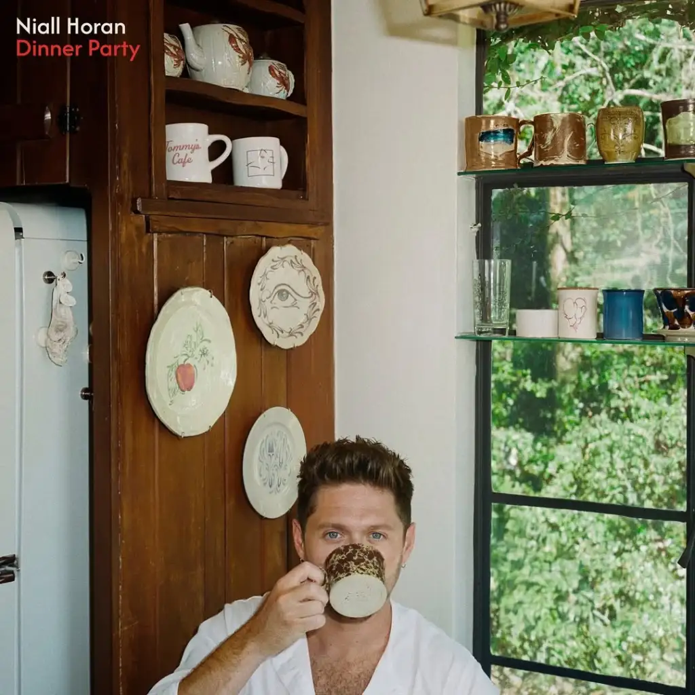

Little more time, por ejemplo siendo el segundo single del disco a pesar de lo pegadiza que suene la canción, está pidiendo una última oportunidad. Esto construye una atmósfera melancólica y cálida. Nunca pueden faltar las baladas en la música de Niall, por lo que en este disco tenemos canciones como Better man, explora la inseguridad en una relación amorosa donde suena como una confesión.
Un esencial también es lo que podríamos denominar como bedroom pop, canciones como Boys are fun, Monochromatic, Pretty o Taste so good que suenan como volver a tener 14 años bailando en tu habitación las canciones de tus artistas favoritos.
Siempre encontramos canciones un poco catárticas en sus discos como por ejemplo Paper Houses en Flicker, Still en Heartbreak Weather o Science en The Show. En este disco su equivalente sería la canción Die if I Don’t, retrata la dificultad de superar a alguien con quien aún existe una conexión emocional intensa.
Termina con la canción más emotiva para los fans debido a que esta dedicada a su excompañero de banda Liam Payne quien falleció en octubre de 2024. End of an era, Niall comenta en entrevistas que se dieron cuenta de que esta canción trataba de Liam tras terminarla, dice que se sentía como una despedida para él.
Tras el anuncio de los primeros singles Niall decidió ser el anfitrión de sus propias Dinner Parties. Cantó canciones de anteriores álbumes y canciones que aún no habían salido a la luz en su momento.
Ha ofrecido diferentes Listening parties por todo el mundo, donde los fans podían disfrutar del disco uno o dos días antes en exclusiva. Aunque unos tuvieron más suerte que otros y Niall apareció en los eventos de Berlín, Londres y Milán dando un pequeño Showcase. además de servir una pequeña cena.
Niall abre su nueva etapa en la música, emocionado por este nuevo proyecto que trae entre manos. Acompañado de una gira mundial por todo el mundo llamada Dinner Party: Live on tour.